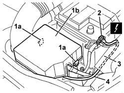
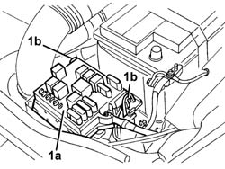
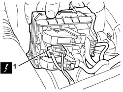
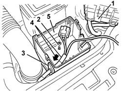

5505A28 container of supplementary junction unit in engine bay - r r
- Path
- Procedures > 55 ELECTRICAL EQUIPMENT > 5505 ELECTRICAL CIRCUIT FOR INSTRUMENTS/INDICATORS > 5505A multi-function components > 5505A28 container of supplementary junction unit in engine bay - r r
- Kind
- repair procedure (removal / refitting; the operation number is the code)
- Applies to
- all engines; all production periods
- Interactive page
- https://sloeber94.github.io/elrnDB-a147/en/#/3025483
Applies to: engines: 1.9 JTD 16V; all production periods
 Removing
Removing
 Refitting
RefittingApplies to: engines: 1.9 JTD 16V; all production periods
Open the bonnet lid.
1. Release the retainers (1a) and remove the cover (1b).
2. Disconnect the electrical connection.
 | Name | Connector |
|---|---|---|
2 | Battery earth |
3. Open the wiring retaining duct.
4. Move the earth wiring away from the duct.

Applies to: engines: 1.9 JTD 16V; all production periods
1. Release the control unit (1a) from the two side retainers (1b).

Applies to: engines: 1.9 JTD 16V; all production periods
1. Lift up the control unit slightly and disconnect the only electrical connection shown.
| Name | Connector |
|---|---|---|
1 | Engine compartment junction unit |

Applies to: engines: 1.9 JTD 16V; all production periods
1. Move the control unit.
2. Undo the nut.
3. Remove the seal.
4. Release the wiring from the control unit container.
5. Remove the control unit container.

Applies to: all engines; all production periods
Refitting
RemovingCheck that the additional junction unit container is not damaged.
Position the container.
Insert the wiring in the control unit container.
Fit the seal.
Tighten the nut.
Connect the electrical connection.
Position the control unit and attach it to the side retainers.
Position the earth wiring in the duct and closed it.
Connect the electrical connection.
Close the cover and attach the retainers.
Test the electrical system.
Applies to: engines: 1.9 JTD 16V; all production periods
Topics linked from this page (4)
- 7025A12 Engine front sound insulation COVER - R.R.
- 7025A14 Bonnet LID - R.R.
- B1E Engine compartment junction unit ( Connectors )
- C1 Battery earth